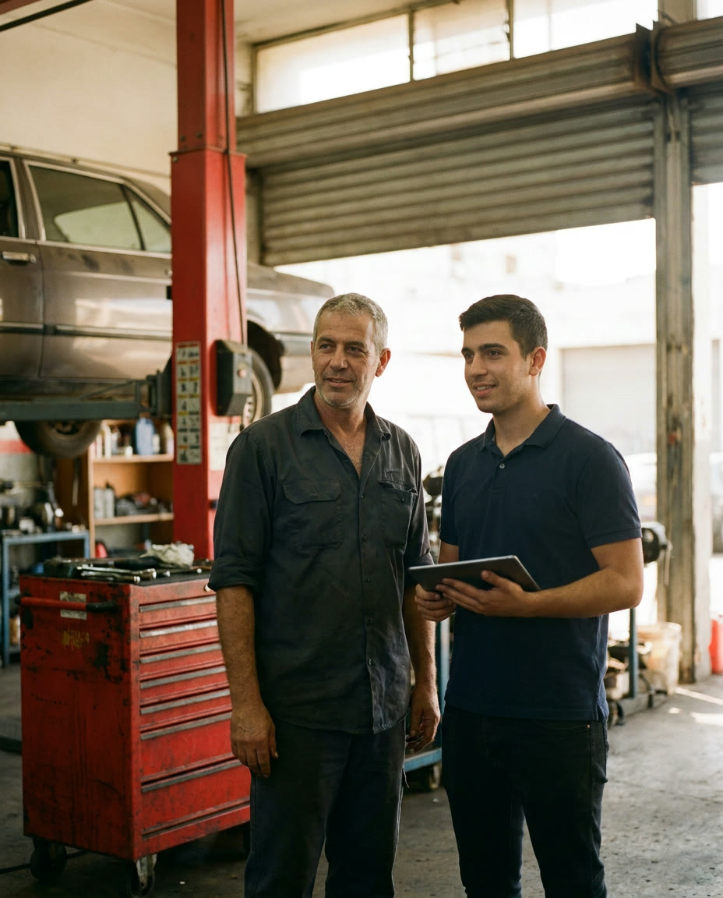

שמעון פתח. אבי בנה. דניאל ממשיך.
מוסך עצמאי לכל סוגי הרכבים: טיפולים, בלמים, חשמל ומיזוג, והכנה וליווי לטסט. ארבעה ליפטים, וצוות שמדבר איתך בעברית, בערבית וברוסית.
מה שהשתנה: אתה כבר לא צריך לתפוס אותנו בטלפון. קובעים תור לבד, מאשרים תיקון בוואטסאפ, ומקבלים הודעה כשהרכב מוכן.
שמעוןהקים ב-1998
אבימנהל מאז 2009
דניאלמנהל העבודה